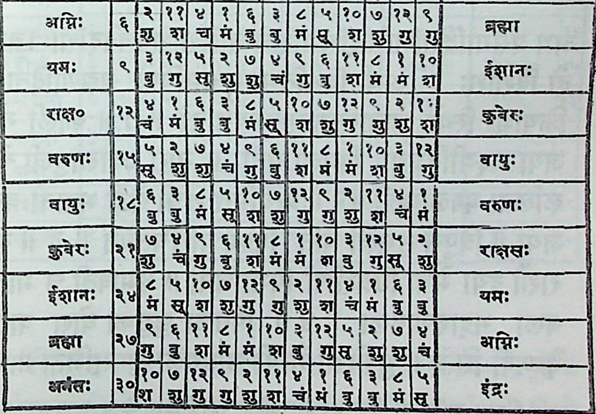

भावाञीकासष्हितः । (७) दशांशपानामधिपास्तदीशादोजे समे तन्नवमेश्वरबाः॥ ओज क[क च सवे = हि ज णु ०२, + लछानामधिपास्तदीशाश्वतञचैखो विष्णुदये दिनेशः ॥ १७ ॥ युग्मे करमाब्यत्ययगरेव राशो षयंशपानामधिपाश्त्वयुग्े ॥ ९९ ॥ एकराशि ३० अंशको दशम भाग ३। ३ अंशा होना हे इसे दशांश कते ई विषम् रिम अपनी राशित्ते सममं उसके नवम शि गिनना इन स्वाभी इन्दि दश रिक्पाछ हें ॥ १४॥ दोडशांश राके सोखह्वे भागक्तो कहते द नो अं १ क ५२्बि. ३० का होता है विषमराशिे ब्रह्मा ९ विष्ण > हर ३ सूपे ५ इस कमसे ओर समगाशचमे विपरीत अथीद् सूयै १ हर २. विष्णु ३ ब्रह्मा ४ किसीका मतहे क्कि बारह राशियेकरि स्वामी छेकर उपर ४ ञेशङ्ञे स्यि सूयाद ४ है. सममे प्रथम व्र्मादि नव राशिस्वानी नानने. इका स्पष्ट चक्रमे च्खिते ह. दशां शभी चक्रमे देखे ॥ १५ ॥ न 4114... |€ | ३।२।१० ३ ।१२|५|२ [७ [४९ [६ | ध म|ग्ञु। ॐ न्च| गु |च | ^ ज य्
